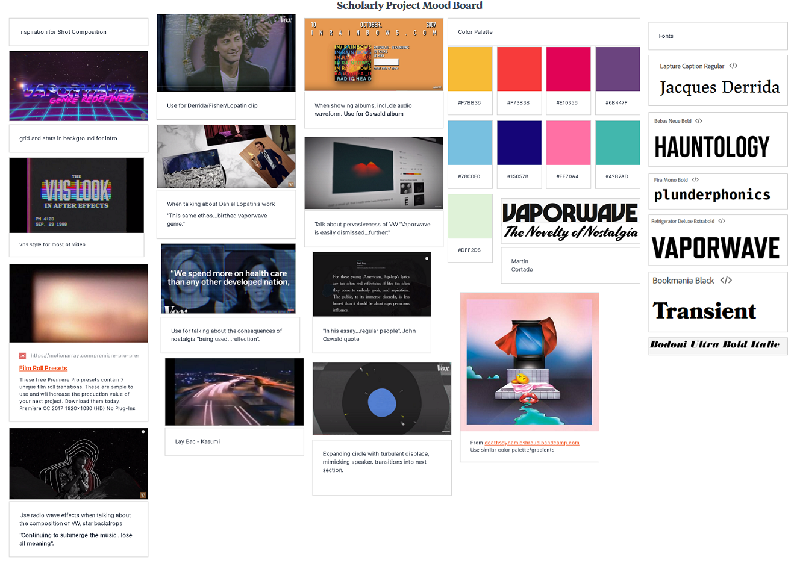
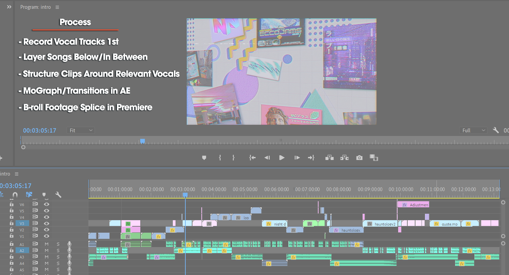
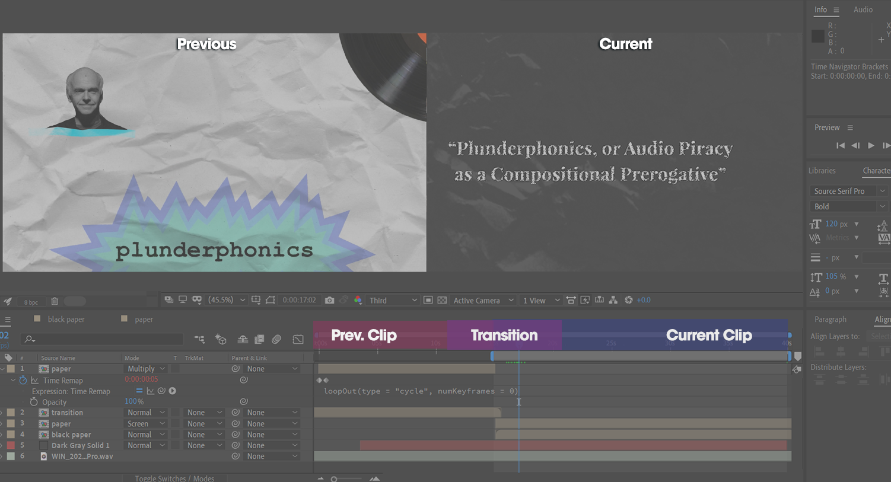

Honors Scholarly Project
As part of my honors coursework, I conducted an interdisciplinary research project, where I combine my love and expertise in contemporary media with larger concepts in the world of philosophy. My research is centered around the usage of nostalgia in the digital age, what is significant about it and what implications might it hold for the future.
The finished result of the project is a documentary-styled video essay, where I introduce the philosophical concepts and literary basis in a more visual style. I did this both to enhance and further utilize what I've learned in my time in computer graphics, but also to demonstrate the unique power of a creativity-based, interdisciplinary project.
Illustration / Typography / Animation
Research/Pre-Production
On Youtube, there is an entire genre of videos called video essays, meant to showcase a piece of popular media in a more formal, analytical tone. Styles vary from creator to creator, both in terms of dialogue and visuals. Part of my research process, in addition to reading up on my chosen topic, consisted of studying essays from a variety of channels, to determine a proper structure, as well as common techniques and inspiration for effective edits. The challenge is finding your own unique voice and style among the barrage of similar creators. In addition, I studied various visual motifs and tropes in 80's and 90's media, in order to create a video that can transplant the viewer in a bye-gone era.

The literary research process, as well as creating a script, proved to be the most time-consuming aspect. I wanted to condense the essence of much of online media, as casually as it presents itself, by grounding it in the world of academia. Balance was the keyword: avoid alienating viewers who are unaware, as well as try and draw in those already familiar. Ground my work in the realm of serious research, but illustrate my love for the topic and make it fun.
Development
Comparing my script to other essays like it, mine definitely struck a much more academic tone, not just with the inclusion of many written sources, but diction and phrasing as well. If I was to make any improvements to the project, I would look into re-writing the script by having it come across a bit more casual, or simply deliver it more casually.
Given that this video would be an unprecedented undertaking, there were moments early on when I wondered if I was a little in over my head. However, like any project of a larger scope, it is imperative to segment the work into sections and take each one at a time. Doing this would not only put my mind at ease, but would also come to define the work pipeline I followed. I would create a majority of clips in After Effects, including the transitions that would introduce each clip and the last remaining frames of the previous clip. This would then create the seamless feel between sections.

